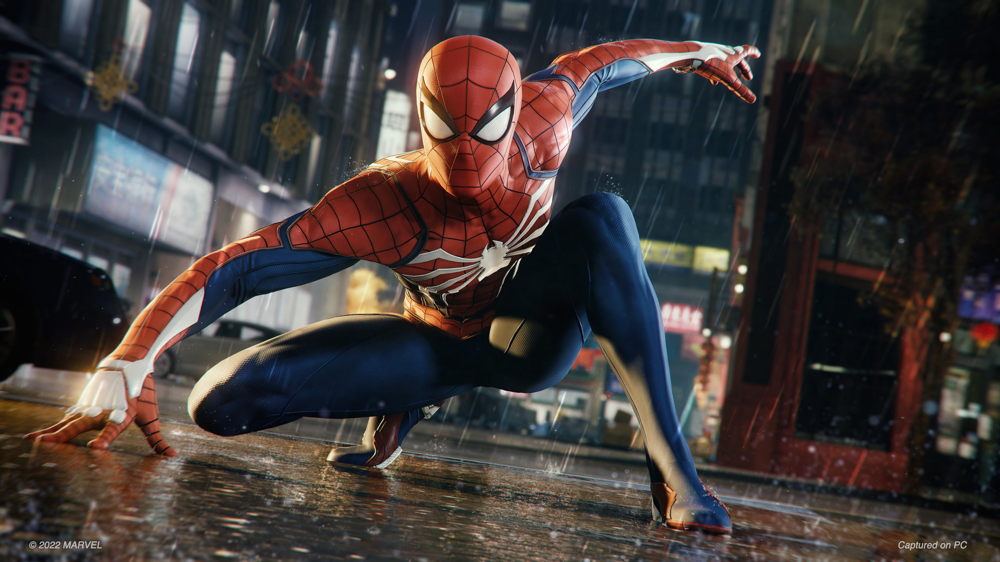

Aquí contaremos información sobre los diferentes actores que han participado en las peliculas.
Tobey Maguire no fue el primero. Antes de que el actor se pusiera el traje en Spider-Man (2002), Spider-Man 2 (2004) y Spider-Man 3 (2007), Nicholas Hammond ya lo había hecho para la serie Spiderman (1977-1979). Sin embargo, Tobey Maguire sí es el primer actor en ser Spider-Man en el Universo Cinematográfico de Marvel, que comenzó en la década de los años 2000. Tras haber cogido impulso los superhéroes en el cine, se empezaron a hacer películas de otros personajes como Iron Man, Hulk, Los Vengadores o Capitán América. Y tras cinco años sin saberse nada del superhéroe arácnido, Marvel anunció que Andrew Garfield encarnaría esta vez a Spider-Man. Por último tenemos alactual intérprete de Spider-Man, Tom Holland. El joven actor de 25 años se puso el traje del superhéroe arácnido por primera vez en Capitán América: Civil War (2016). Fue una aparición estelar con la que se confirmó que Spider-Man sería un vengador más. Al año siguiente se estrenó Spider-Man: Homecoming (2017) y desde entonces se ha convertido en el favorito de muchos por mostrar al Peter Parker más vulnerable y al Spider-Man más valiente, habiendo luchado contra Buitre, Misterio y el poderoso Thanos. Aunque también es el Spider-Man más novato.
